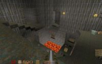
Скриншот из Q1, очень мясной карты dm4
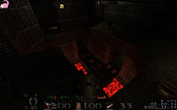
Так оно выглядит в 21 веке
Quake (Quake-<номер игры>, Q-<номер игры>, Ку-<номер игры>, квака, квач) — серия компьютерных игр в жанре FPS производства Кармак и компания. Первая игра серии появилась летом 1996 года как гром средь ясного неба и очень быстро стала культовой.
На данный момент в серии Quake четыре игры переменной успешности (алсо куча модов, аддонов и целая армия игр на основе движков id Software). Q2 — вин, но постепенно умер; Q3 — живее всех живых ибо Quake Live; Q4 многими расценивается как фейл, хотя технически игра вполне годная (Q4 делали не в id Software, а бравые ребята из Равена). Стоит сказать, что выход каждой новой игры серии сопровождался срачем «квач уже не торт», но со временем такое отношение проходило. Ку3 тому самый яркий пример.
Quake ориентирована на сетевую игру и проведение соревнований между игроками и популярна в интернетах среди различных социальных слоев, от битардов до эмо-кидов. В последнее время к Quake пристрастились лабораторные мыши.
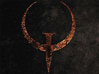
первый
Сюжет, который был всем до фени, очень сильно напоминает Дум. Правительство придумало телепорт «Slipgate», а по ту сторону оказались толпы врагов которые без особого разбора мочили всех, кто не похож на них самих. Вместо того, чтобы выпилить всех монстров армией, посылают одинокого Рейнджера (даже не морпеха!). В игре 4 эпизода и финальный уровень. Каждый эпизод начинается с какой-то базы где стоит телепорт во вражеское измерение. Цель — собрать руны в конце каждого эпизода и выпилить финального босса.
Quake стал первой игрой от id Software, использующей по-настоящему трёхмерный полигональный движок, в отличие от предыдущих игр, таких как Doom. Большинство объектов в игре были полигональными моделями. Т.о. Quake-1 была первой популярной полностью-3D игрой, в которой спрайты использовались по минимуму. В игре (статус-бар не считаем) спрайтовыми были только взрывы и фонарики. Огонь был полигональным. Позже, в Ку2, взрывы тоже сделают полигональными, а ещё позже — да в том же Анрыле — поймут, насколько уёбищны полигональные пламя и взрывы. Есть и зачатки системы частиц — кровь, эффект от телепорта и дым ракет. Появившийся же практически одновременно Duke Nukem был т. н. «2.5D» игрой, поскольку думоподобный движок «Build» от б-гомерзкой на тот момент 3D Realms просто проецировал картинку на двухмерную сетку, плюс задавал для разных областей переменные высоты, и почти полностью (как и Дум) состоял из строго вертикальных и строго горизонтальных стен (более простых для рендеринга). Чтобы не нарушать такую горизонтально-вертикальность при взгляде вверх-вниз, поворот головы в вертикальной плоскости был выполнен не в виде преобразования матрицы, а в виде банального сдвига картинки (отсюда такая корявая перспектива при взгляде вверх/вниз). Вообще Quake vs. Duke — тот ещё холивар. Лучше всего вопрос рассмотрен в 12-ом выпуске Былое и DOOMы.
Quake-1 отличается готичным антуражем, хорошо сбалансированной системой оружия (баланс такой: или у тебя есть рокет и красный армор, или ты мечтаешь о них).
Алсо с книги «Санитары Подземелий», являвшейся по сути учебником по игре в Quake и Team Fortress начиналась раскрутка некоего ст. у/о о/у Гоблина.
Благодаря языку программирования QuakeC для Quake-1, существовало огромное количество модификаций, одна из самых популярных — Team Fortress, которая, фактически соперничала по популярности с самой квакой. (А ещё есть заслуживающий внимания глубокий мод nehahra, который надо погуглить и дозапилить в статью). Очень доставляла QuakeRally — кровавая гоночка. Серия игр Half-Life и, естественно, все модификации под неё, в том числе весьма популярная среди быдла серия Counter-Strike, основаны на очень сильно изменённом движке первой Кваки с некоторыми элементами из кода Q2.
Также в Quake-1 было много крови и мяса. Красивая была игра… Именно в Quake-1 впервые появились рокет-джамп (rocketjump) и грена-джамп (grenadejump), сделавшие игру интересней и динамичней.
Эпичнейшим вином кваки можно считать мультиплеер. В отличие от старичка дума или того-же Бздюка Хрюкема, где была система клиент-клиент, тут уже была система клиент-сервер и появилась возможность начистить морду какому-нибудь американцу (если, разумеется, пинг был не 600) без особых телодвижений и плясок с синхронизацией. Буквально через пол года был выпущен QuakeWorld с перепиленным сетевым кодом и процесс начищения морд стал ещё лучше. Фактический, все современные порты по сути чуть более чем полностью QuakeWorld. Затем появился годный порт под windows — WinQuake, ну и под конец порт для графических ускорителей — GLQuake.
Среди современных GL-портов для неё лучшим можно назвать DarkPlaces пруф. При наличии хорошего текстуре-пака графика выглядит на уровне третьего дума, при этом наблюдается чуть более, чем дохуя кровищи и мяса, на что можно невозбранно фапать.
Алсо, существует два достаточно винрарных аддона к Q1 — Scourge of Armogon и Dissolution of Eternity. Первый добавляет пыщ-пыщ лучемет в качестве ствола, молот Мьолльнир, бьющийся молниями, как напарника топору, миномет как подспорье гранатомету, гремлинов, возрождающих падших монстров в виде гремлинов, и меха-скорпионов с пулеметами (гвоздеметами) в качестве монстров. Боссом выступает «генерал Квейка» по имени Армогон. Второй же игнорирует первый аддон, и добавляет «огненные» гвозди для гвоздеметов (еще сто усиленных патронов в обойму), а также «кластерные ракеты», являющие собой аналог банано-бомбы из Worms для гранатомета или же выстреливающиеся как 5 (пять (!!!1111)) ракет из ракетницы. Ну и плазмаган как коллегу шафта, снаряд которого разрывается в точке попадания и поражает несколько целей теми самыми «молниями». В монстрятнике прописались огры с кластерными гранатами, призраки с дофигищщем единичек жизни, перекрашенными снарядами vore и взрывом как прощальным «мерси», каменные версии рыцарей на одном из уровней, «служители Квейка», косплеящие древнеегипетских жрецов и палящие лучами из посохов. Минибосс — «повелитель призраков», четырехрукий авианазгул. Боссом — злющий дракон, сторожащий что-то вроде системы управления слипгейтами.
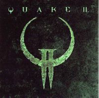
второй
Средневеково-демоническая тематика в этой игре была заменена на космический хай-тек. Изначально игра вообще не должна была иметь к Quake отношения, но девелоперы посчитали, что под раскрученным брендом продавать ее будет легче. Профит! Сюжетец разворачивается между Enemy Territory: Quake Wars и Quake 4. После изгнания злобных строггов с Земли люди, не мешкая, решили жахнуть по вражеской родной планете. Но не тут-то было. Строггос оказался анально огорожен от всякого вторжения, в том числе вундервафлей Big-Gun. В итоге было принято стратегическое решение — быстренько закинуть на планету десант что бы он выпилил всю оборону. Сказано — сделано. Вот только из всего десанта выжили только вы. Тем не менее по ходу игры строггам наносится неиллюзорный ущерб. (спойлер: Вы таки уничтожаете и тот самый Биг-ган, и всю планетарную оборону, останавливаете завод по переработке мяса людей, и даже укокашиваете самую главную сволочь всея строггов - Макрона).
От большинства собратьев игра отличалась поддержкой OpenGL в общем, и 3dfx в частности. Собственно, именно она стала главным двигателем продаж чудо-карт. Именно кваку 2 любили пускать на продаваемых компьютерах в качестве демонстрации мощьностей. Также синглплеер доставлял тем, что уровни имели нелинейную структуру. Обычно в таких играх всё было просто — появился, нашёл выход, новый уровень, появился… Здесь-же появившись на уровне B вас могли тут-же послать на уровень A, но через другой проход, и на А вы оказывались в ранее недоступном месте, жали кнопочку и открывали дверку на В. К сожалению, смачно разлетающиеся куски мяса (gibs — была даже шутка: «Подскользнулся, упал, очнулся — gibs») противника, разорванного ракетой или телефрагом, заменили горсткой кровавых соплей — лулзов. В мультиплеере оторванная голова с вытаращенными квадратными глазами, ВНЕЗАПНО закинутая взрывом с первого этажа на второй, доставляла обитателям этого самого второго этажа неимоверно. Движок второй кваки таких фокусов уже не позволял, и фану от массовых побоищ стало поменьше. Зато появились новые виды оружия, например BFG-10K и рельсá (Railgun, машинный перевод — железнодорожная пушка)
Но если с синглплеером был более-менее понятно, то мультиплеер оказался не таким одназначным. Помимо вышеописанной «проблемы» были и более глобальные
Также Quake2 породил такой социальный лулз, как «выебывающийся пиздюк». Получил большое распространение в компьютерных клубах. Данные индивиды были необычны тем, что в процессе игры активно лили говно на окружающих независимо от пола и разницы в возрасте своих оппонентов. Так как имели некислый скилз в кваке, как правило возмездия в физическом плане не получали, а наоборот активно вербовались в кланы. В основном все словосочетания строились на базе оральных половых отношений с разнообразными предметами быта Например:
— «СОСО»
— «Соси стелаж!»
— «Отсоси сбоку!»
И даже «СОСИ МИЦГОЛ!». Причём, без запятой, что странно…
Первыми клубами для лицезрения подобных лулзов являлись «Орки» (что как бы намекает) и MTF.
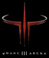
третий
Наиболее популярная на данный момент игра из серии. Сюжета как такового нет. Есть только завязка. Некто Вардригалы где-то там построили несколько арен, понабрали лучших воинов с разных миров и устроили гладиаторские бои себе на радость. Nuff said. В отличие от двух предыдущих, ориентирована исключительно на игру по сети и в ней нет толкового режима для одного игрока — только тренировка с ботами, к тому-же туповатыми.
В своё время породила тонны ненавести, холиваров и прочих лулзов. Ситуация обострялась наличием прямого конкурента в лице Unreal Tournament. Активно обсуждалось:
Играют в Ку-3 в основном под двумя модами — архаичный OSP, закончивший свое развитие на версии 1.03а, и развивающийся ныне CPMA (в свою очередь поддерживающий геймплей OSP, но как-то не так), так же имеется затяжной холивор между адептами того и другого. Для обывателя же разница между ними исчезающе мала.
Также в последствии был выпущен add-on — Team Arena. Авторами выступила сама id, чего не случалось уже очень давно. В игру добавили пару моделей, немного расширили арсенал (появился гвоздомёт, пулемёт, мины), появились power-up’ы постоянного действия (например Scout увеличивал скорость игрока, а Doubler увеличивал урон в два раза). Разумеется запилили парочку новых карт и даже добавили новые режимы как Harvest или One Flag CTF. Но в целом — аддон в народ не пошёл. Тем не менее в Quake Live он всё-же присутствует.
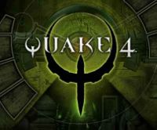
четвёртый
Игра попыталась продолжить традиции Quake II, однако по мнению многих, оказалась фейлом. Сюжет начинается примерно там-же, где закончилась история Q2. После подрыва планетарной защиты Строггоса (в частности уничтожения Big-Gun) космическая морская пехота начала массивную атаку. Вы играете за паренька под именем Мэттью Кейн и званием капрал. По ходу прохождения вас таки хватают строгги и начинают процесс перепиливания в себе подобного. В самый последний момент, когда должны перепрошить мозг, врываются хуманы и останавливают всё безобразие. В итоге получился лояльный к Земле Строгг. (спойлер: В игре мы пытаемся выпилить систему нексусов (роутеры глобального масштаба). Терпим фейл, попадаем в плен. По возвращении командование решает не мудрить и шарахнуть по самому что ни на есть CPU, благо игрока как почти Строгга система безопасности пропускает. Вин.)
Самый фейловый фейл игры — атмосфера. Пройдя Ку2, а затем резко засев за Ку4 вы испытаете недоумение. Вроде планета та-же, а вот интерьер совсем другой. Ещё одна трабла — использование движка дума3. Многие тут же подумали, что игра будет жутко тормозить (в целом так и было, но такова традиция) и всё будет темным-темно. Темнота таки да, была. Но если в думе можно было до одурения крутить яркость и так ничего и не увидеть, то здесь результат оказывался вполне положительным.
С мультиплеером вышло всё как обычно. Часть решила, что это таки вин, часть плюнула. По началу были всякие чемпионаты и прочие киберспортивные радости. Особенно доставлял ремейк МЕГА-ПАПСКОЙ карты q2dm1. Но потом интерес сошёл на нет. Ку3 всё-же оказался более живучим, особенно после запуска Quake Live.
В чём-же причина фейла, спросит анонимус? Говорят, в том, что игрушку делали уже не id Software а Raven. Довольно странное утверждение, ибо Рэйвен говна не делал. Soldier of Fortune, Heretic, Jedi Knight 2, из недавнего — неожиданно годная игра X-Men Origins: Wolverine, снятая по унылому фильму.
вражеская территория
Является приквелом Q2, ориентированна исключительно на многопользовательские командные режимы. Построена на мощностях движка Дума 3. Сюжет повествует о том, как в недалёком будущем на матушку-землю ВНЕЗАПНО прилетели строгги. Собственно, каждая миссия — это этапы войнушки. Сюжета в них не больше чем в Battlefield 2 — короткий брифинг перед миссией в виде текста и всё. Ну а итог всей заварушки все кудвакеры и так знают.
В целом игра похожа на Team Fortress или тот-же Battlefield. Есть несколько классов персонажей с разным оружием (причём оружие радикально разное у обоих враждующих сторон). Миссии доставляю тем, что задания не в духе «захватите 5 точек и удержите» а надо, например, сопроводить машинку с ракетой, потом прорваться на вражескую территорию и взорвать бомбу в нужном месте. Иногда встречаются побочные задания в духе «открыть второй проход на вражескую базу». То есть несколько разных заданий на одной карте. Кстати о картах, это первая из игр в серии кваки с большими открытыми пространствами. А что бы путь по этим просторам не был скучным, можно прокатиться на машинке. Есть система рангов, вот только ваши медальки никто не записывает и выдаются строго до конца миссии. Соответственно, никаких анлоков и прочих вкусностей. Задроты негодуют!
После разрыва отношений с id, создатели(Splash Damage) отказались от бесплатной поддержки ETQW и переметнулись в лагерь Bethesda. А игра стала потихоньку загибаться.
живее всех живых
Вслед за таки фейлом Ку-4 в частности и эпическому сливу Epic Games в распихивании своего движка сторонним девелоперам, id невозбранно эксгумировали Ку-3, распяли на браузерный плагин, добавили социальную часть и назвали Quake Live.
Анон поиграл и сообщает. Впечатления кагбе следующие — Quake Live являет собой образец лютого и брутального вина. Ибо воистину Quake 3 — еще торт, и испортить его вряд ли получится. Геймплей изменился чуть-чуть поболее, чем нифига, что, в прочем, скорее хорошо, нежели плохо. Картинка также практически не изменилась, просто теперь вместо мяса и кровищи вспышки света и убраны некоторые эффекты, о которых анон и не вспомнит. «Живая квака» доставляет главным образом за счет атмосферы ниебически огромного компьютерного клуба, и редкой возможностью опиздюлить, скажем, какого-нибудь верноподданного британской короны.
«Социальная часть» — примочка из разряда «не пришей пизде рукав», и никому она в МПХ не уперлась — все задрачиваются на аренах, и лишь единицы френдят друг друга и занимаются прочим онанизмом, годным лишь для «Контакта» и «Одноклассников».
Из действительно вкусных и интересных нововведений — система наград (их там over 9000, не заскучаете), статистика по персонажу и система определения твоего скилла, которая подсказывает тебе арены с соперниками твоего уровня. Последняя, собственно, является самым термоядерным бонусом, ибо позволяет на раз отсечь нубье и задроченных прогеймеров. В последнее время ее регулярно плющит, отчего имеются финальные расклады вроде: лидер — 50, n середняков — 30±, взвод нубов — 15 и меньше (при равном времени игры). Впрочем, никто не мешает тебе полезть на арену к новичкам или задротам. Система пускает максимум только на один уровень скила вниз и на два вверх. Так что с трактористами поиграть получится далеко не всем, а вот анальные приключения можно искать практически невозбранно.
Короче, вердикт: та же Quake 3, только в профиль, модифицированная с умом и знанием дела. Всем лезть и играть быстро, решительно.
Сложно найти более задроченную игру. За 13 лет существования, Ку1 прошли немыслимое количество раз, создали даже сообщество быстрого прохождения (гуглите SDA — speed demos archive, чтобы посмотреть на прохождение всех 4 эпизодов игры за 12 минут 23 секунды, некоторые уровни проходятся за несколько секунд, кому лень гуглить, вот пруфы: запись на движке quake, запись в .avi в хуевом качестве), нашли все неофициальные секреты и пасхалки, использовали все найденные в игре глюки. С одной стороны, задротство — это плохо, но с другой… стали бы играть столь долго и тщательно в плохую игру? По праву прародителями сингл задротства является команда QDQ (quake done quick), которая впервые предоставила в паблик демку прохождения первой кваки 10 июня 1997 года. Прохождение длится 19 минут 49 секунд. 13 сентября того же года демка была перезаписана и выложена уже с результатом 16 минут 35 секунд и называлась, как неудивительно, Quake done quicker.
Всё это весьма доставляет фанатам-красноглазикам. По началу движок распространяют как бинарный пакет, а потом выкладывают и сорсы…
id одна из первых контор, которая начала продавать свои движки. А поскольку они их делать умеют, то продаются довольно неплохо. Со временем Ид выкидывает движки в свободный доступ. Так, в 2005 году свободно распространяемым стал движок Q3.
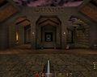
Начало. Тут любили тестить пентиумы
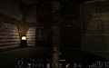
Тут пентиумы уже лажают (DarkPlaces)
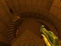
Винрарнейшая мапа q2dm1 (The Edge) by Tim Willits
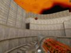
Типичное такое мясцо
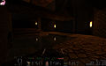
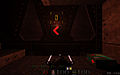
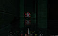
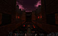
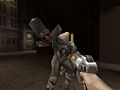
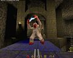
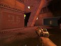
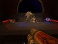
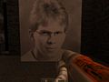
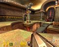
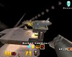
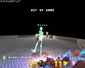
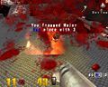
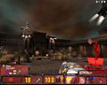